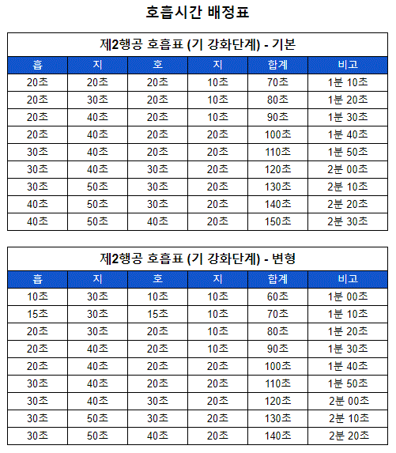

제1차 행공(기(氣) 축적 단계)을 무사히 마친 사람은 이제부터 생명에너지를 보다 차원 높은 수준으로 끌어올리는 제2차 행공(기(氣) 강화 단계) 수련에 임해야 한다.
이 글을 처음 대하는 수련자라면 당연히 1차 행공부터 시작하여 차츰 그 단계를 높여 나가야 할 것이다. 보통 1차 행공의 기간은 1개월에서 2개월 정도 소요된다. 그리고 1차 행공을 바탕으로 \<수련 전 경고 사항 및 주의 사항>을 참고하는 것이 좋을 것이다.
2차 행공부터는 특별한 일이 아니라면 하루 행공 시간이 최소 2시간 정도는 되도록 하는 것이 바람직하다. 이는 행공 준비운동과 정리운동을 포함한 시간이다.
만약 3시간 이상 행공을 하려는 수련자라면 한 번에 3시간을 하는 게 아니라 한 차례는 2시간, 나머지 한 차례는 1시간 수련을 하는 식으로 행공을 하면 된다. 4시간 이상 수련을 한다고 하면, 2시간씩 2차례 이런 식이다.
그리고 호흡을 전공하려는 수련자라면, 하루 최대 8시간 이내로 하는 것이 좋다. 그 이상 수련을 하면 효과는 없고, 오히려 몸에 무리만 간다. 물론 시간을 얘기하는 김에 미리 얘기하는 것이지, 2차 행공부터 이렇게 무리하라는 뜻은 아니니 오해 없기를 바란다.
다만 생명에너지의 축적은 호흡량과 행공 시간에 비례하므로, 호흡량이 잘 늘어나지 않는다면 체력과 시간이 허락해 준다는 가정하에, 행공 시간을 올려주는 것만으로 어렵지 않게 호흡량의 벽을 넘어설 수 있다.
1분대 호흡을 하는 수련자가 처음부터 1분 호흡을 행하는 것은 아니다. 수련을 하루 종일 하는 것이 아니기 때문에 첫 호흡부터 그럴 수는 없기 때문이다. 처음에는 자신의 호흡량에 맞춰 낮은 호흡으로 시작해서 점진적으로 1분대 호흡을 하면 된다.
앞으로 모든 호흡량은 처음에는 약한 호흡으로 시작해서 차츰 호흡량을 올려 가는 방식으로 시도한다. 그리고 1주일에 1~2회 정도 자신의 최대 호흡량에 시험 삼아 도전해 보면 된다. 하지만 너무 욕심을 부리면 안 된다. 무리라고 생각되면 즉시 약한 호흡량으로 돌아와야 한다.
1차 행공(1분대 이하의 호흡)은 연속 호흡을 하였지만, 2차 행공부터는 연속 호흡은 크게 의미가 없다. 1분대가 넘어가면서부터는 한 호흡을 마치면 직통 호흡이나 자연 호흡으로 숨을 골라 주고 다음 호흡을 하는 것이 좋다. 이렇게 잠시 호흡을 고르면서 기세수나 신장 강화하기 등을 추가해 주어도 된다.
그리고 호흡량이 불규칙한 것이 2차 행공의 특징이다. 호흡이 잘될 때는 호흡량이 크게 늘었다가, 안 될 때는 1분대 호흡도 힘들 때가 있다. 이러한 특성을 이해하고 개념치 말고 용맹 정진할 필요성이 있다. 그래야 심신이 더욱 튼튼해지면서 높은 호흡량을 감당할 수 있게 되는 것이다.
호흡량이 갑자기 낮아졌을 때는 억지로 호흡을 늘리지 말고, 낮은 호흡을 충분히 즐기면서 차차 호흡을 회복해 나아가면 호흡량이 늘게끔 되어 있다. 수련 내내 강공을 하는 것이 아니라, 중간중간 호흡량이 약해지면 그 상태를 유지하며 즐기면 된다는 것이다. 즉, 약공을 병행하는 것이다.
1차 행공에서는 흡지호로 끝났다. 하지만 2차 행공부터는 흡(들숨), 지(1차 멈춤), 호(날숨), 지(2차 멈춤)으로 늘어난 것을 확인할 수 있을 것이다.
그러니까 1차 행공에서는 볼 수 없었던 2차 지식이 하나 더 생겨난 것이다. 1차 지식이 꿈틀거리거나 물컹한 액체의 특징이 느껴진다면, 2차 지식은 전기성을 지닌 짜릿한 느낌이 특징이다. 2차 지식이 있는 이유는 2차 지식을 통하여 생명에너지를 강화시킬 수 있기 때문이다. 말하자면 2차 지식을 통하여 전체적인 호흡량의 증가를 가지고 올 수 있다.
다만 2차 지식에 별다른 감흥이 없거나 자신에게 맞지 않는다고 생각이 든다면 생략해도 무방하다.
호흡량 배정표는 강제적인 게 아니라 그것을 참고 삼아 자신에게 맞게 응용해도 된다.
물론 처음에는 지시된 방법대로 하는 것이 우선이다. 일단은 지시한 호흡표대로 수련을 진행해 보면서 자신에게 맞는 방법이 있다면 그것을 토대로 호흡표를 조정하라는 뜻이다.

2차 행공은 지식(止息) 상태에서 기를 강화시키는 단계이다. 지식 상태가 1차 행공보다 상대적으로 늘어난 상태이다.
호흡량이 늘어남에 따라 1차 지식이 40초 이상을 넘길 때는 ‘보흡(補吸)’을 통해서 보다 높은 호흡량에 도전해 나가는 것이 효과적이다.
그리고 본격적으로 임맥과 독맥의 중요한 경혈을 순환하는 소주천(임독 유통) 단계를 시작할 때가 되었다. 1차 행공 때는 하단전에 기를 본격적으로 축적·배양하는 단계였다면, 이제는 이것을 임독이맥으로 이끌어 생명에너지를 순환시켜 더욱 강화해 나아가야 하는 것이다.
이런 식으로 시작해서 소주천이 충분히 숙달되면, 전신주천 그리고 경락 유통 등을 병행해 가면서 조금씩 범위를 넓혀 가면 된다.